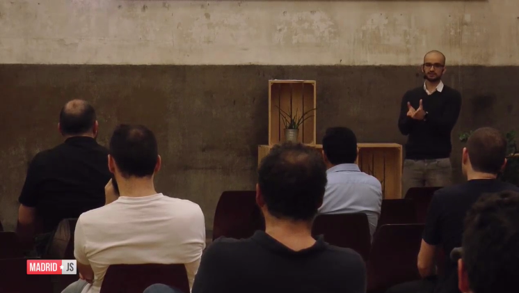
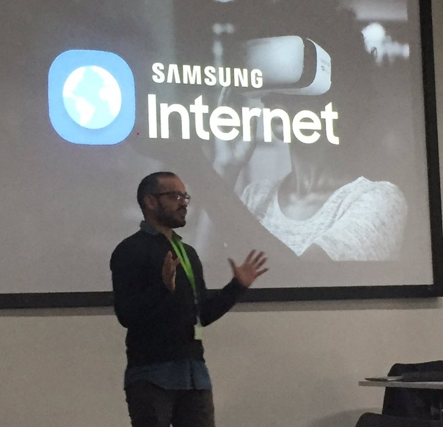
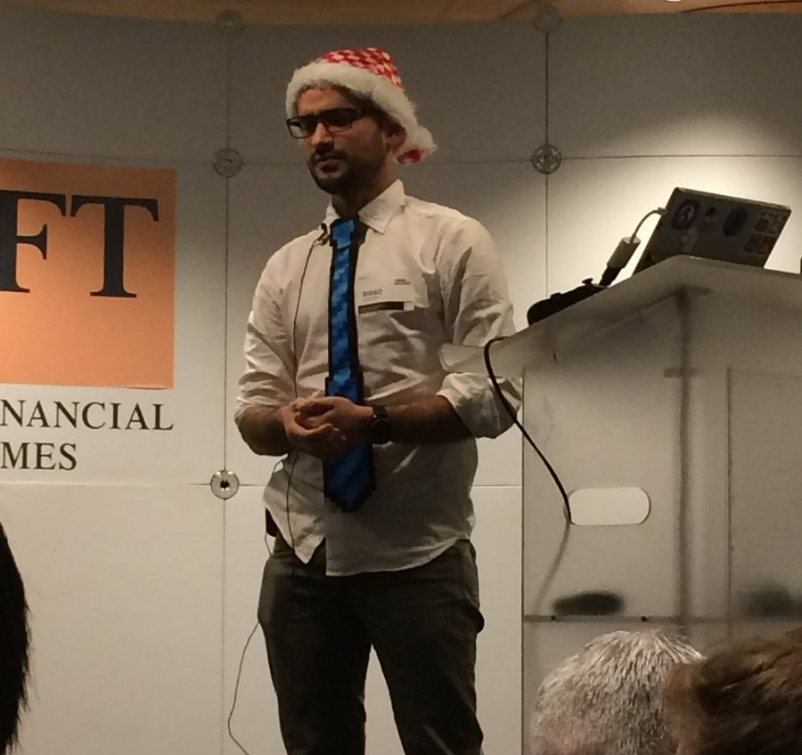
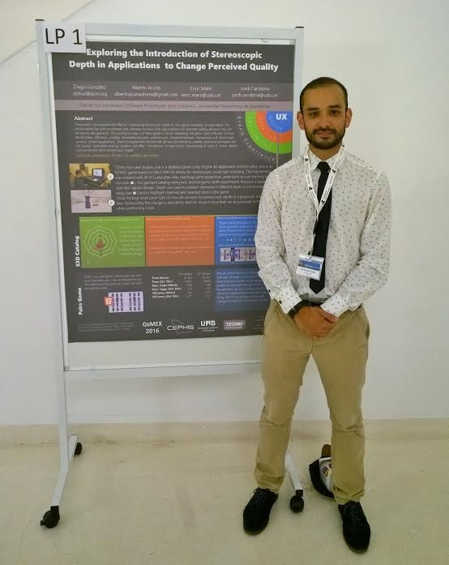
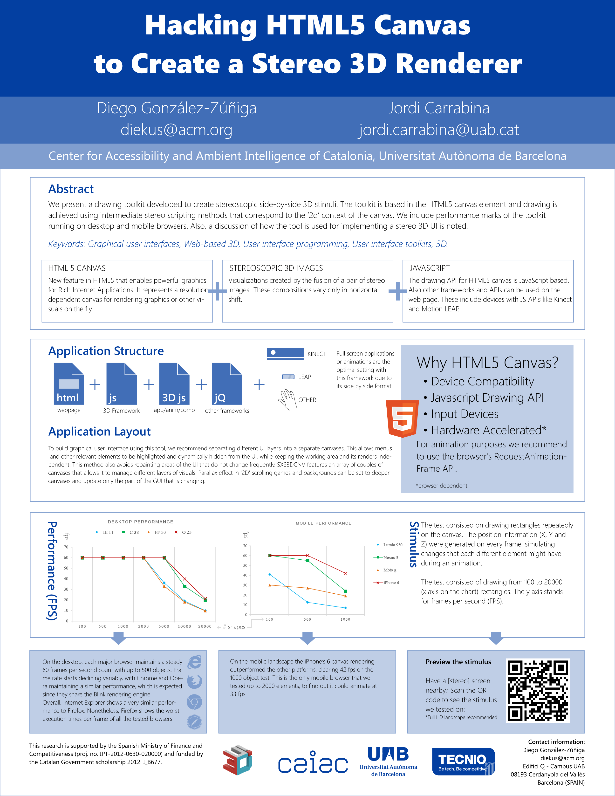
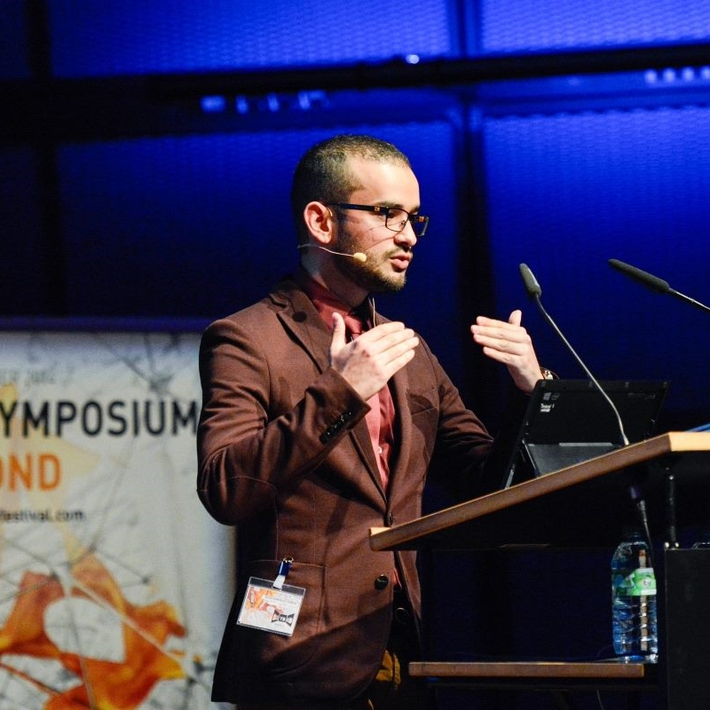
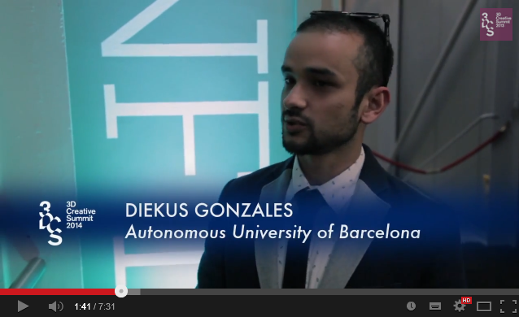
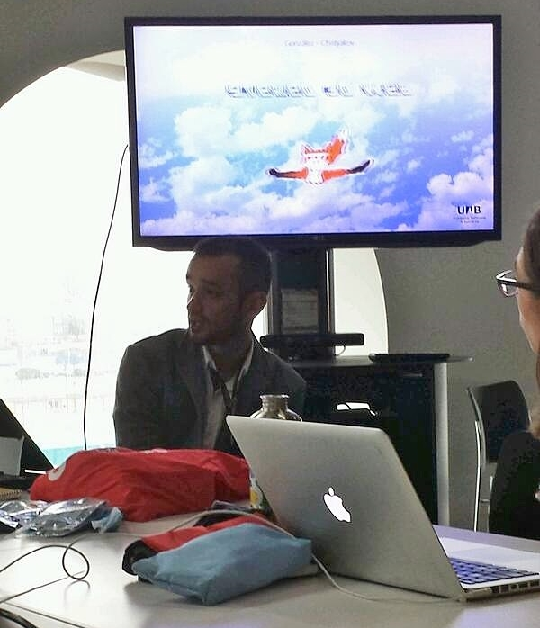
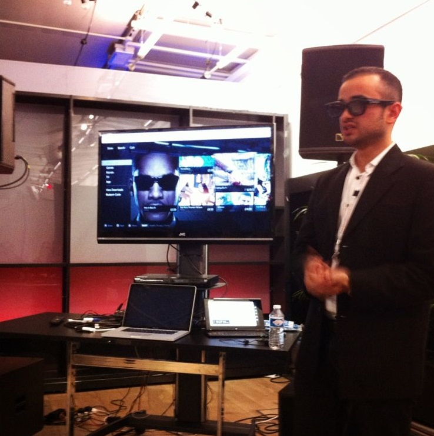

diekus' web space
Diego (diekus) Gonzalez-Zuniga. Web Advocate at Samsung Internet. Immigrant from Costa Rica. Based in London. Gadget aficionado. Gamer.
past presentations
 VRUK Festival 2017
VRUK Festival 2017
London, UK. 7 July, 2017
Presentation titled "Bridging Experiences with the Web".
Let me explain how can we bridge worlds and experiences by tapping a link.
 LOOK FORWARD Fashion Tech
LOOK FORWARD Fashion Tech
 Paris, France. 28 June, 2017
Paris, France. 28 June, 2017
Presented a VR collaboration with fashion designer Galina Mihaleva at LOOK FORWARD FASHION TECH FESTIVAL.
Read a recap of the event here.
 Symposium on Innovation, Biodesign, Culture, and Technology
Symposium on Innovation, Biodesign, Culture, and Technology
 Nanyang, Singapore. 21 June, 2017
Nanyang, Singapore. 21 June, 2017
Presented at the ADM 2017 Symposium on Innovation, Biodesign, Culture, and Technology
 WORLD VR FORUM
WORLD VR FORUM
 Crans-Montana, Switzerland. 11 - 14 May, 2017
Crans-Montana, Switzerland. 11 - 14 May, 2017
Presented "Progressive WebVR Applications: a modern VR approach". Slides can be found here.

 VRX Europe 2017
VRX Europe 2017
London, UK. 11 May, 2017
Participated as a panelist in the WebVR session with Dom Hazael-Massieux (W3C), Salvador de la Puente (Mozilla), Thomas Flynn (Sketchfab). Chaired by Tony Parisi (Unity).

 VR World Congress 2017
VR World Congress 2017
London, UK. 13 April, 2017
Participated as a panelist on the WebVR session with Thomas Balouet, Fabien Benetou, and Antti Jädertpolm. Chaired by Amir-Esmaeil Bozorgzadeh.
Find the recording of the panel here.

 Rave Sessions: WebVR
Rave Sessions: WebVR
London, UK. 10-11 April, 2017
Gave two consecutive workshops at Ravensbourne College in London about WebVR and A-Frame.
Find the slides here.

 IEEE VR 2017
IEEE VR 2017
Los Angeles, USA. 18 March, 2017
Gave a tutorial on WebVR with Peter O'Shaughnessy, Diego Marcos and Kevin Ngo. The tutorial focuses on Virtual Reality on the web and how researchers and developers can leverage its power to create content. Recap of my trip here.

 Web Games Day 2017 (Mozilla Dev Road Show)
Web Games Day 2017 (Mozilla Dev Road Show)
Madrid, Spain. - 10 March, 2017
Presented at Web Games Day (part of Mozilla Dev Road Show) event in Madrid. You can watch the presentation here.

 MadridJS
MadridJS
Madrid, Spain. - 9 March, 2017
Presented at MadridJS meetup about WebVR. Presentation titled "Realidad Virtual llega a tu navegador favorito". You can watch the presentation here.
 Mobile WOrld Progress Barcelona 2017
Mobile WOrld Progress Barcelona 2017
Barcelona, Spain. - 1 March, 2017
Presented "Hypertextual-Reality: VR on the Web" at Mobile World Progress Barcelona 2017. Find a recap of our trip to the catalan capital here.
You can watch the presentation here!


Rave Sessions
London, United Kingdom. - 13 February, 2017
The session provides information on the experimental WebVR JavaScript API. It covers current specification status, discusses available support from major browsers, and development options available for content producers.
 London Web Performance
London Web Performance
London, United Kingdom. - 6 December, 2016
Session presented at the Christmas 2016 Spectacular about a PacMan like WebVR demo. Said to be the first "sing-along" London Web Performace meetup. Watch it here.
 Mozfest 2016
Mozfest 2016
London, United Kingdom. 28 - 10 October, 2016
Joined my Samsung Internet colleagues for a WebVR presentation. Here's a recap!

 BEYOND Festival 2016
BEYOND Festival 2016
Karlsruhe, Germany. 28 - 2 Septermber/October, 2016
Empowering through VR. Podiums discussion about VR and how it can empower people at the BEYOND Festival. Watch it here.

 Digital Media Industry and Academic Forum 2016
Digital Media Industry and Academic Forum 2016
 Santorini, Greece. 4 - 6 July, 2016
Santorini, Greece. 4 - 6 July, 2016
Presented about an Card Sorting exercise over Product Reaction Cards to categorise desirability. "Clustering to Categorize Desirability in Software.".
 International Conference for Quality of Multimedia Experience
International Conference for Quality of Multimedia Experience
 Lisbon, Portugal. 6 - 8 June, 2015
Lisbon, Portugal. 6 - 8 June, 2015
Presented poster an article "Exploring the Introduction of Stereo Depth in Applications to Change Perceived Quality".
 4th International Conference on Communication, Media, Technology and Design
4th International Conference on Communication, Media, Technology and Design
 Dubai, United Arab Emirates. 16 - 18 May, 2015
Dubai, United Arab Emirates. 16 - 18 May, 2015
Presented a project called "S3Doodle: Case Study for Stereoscopic GUI and User Content Creation".

 IEEE 3DUI 2015
IEEE 3DUI 2015
Arles, France. 23 - 24 March, 2015
Presented poster "Hacking HTML5 Canvas to Create a Stereo 3D Renderer". The poster can be seen here.
{kind=link}
BEYOND Festival 2014
Karlsruhe, Germany. 9 - 12 October, 2014
Presented a lecture titled "Let's not bore Alice: Stereo 3D Applications" about the use of 3D in applications. Also, participated in two panels titled "Don't wait for the content to be produced, use what's there and design it for the future!" and "3D is dead, long live 3D". Link to recording found here.
 3D Creative Summit 2014
3D Creative Summit 2014
London, UK. 12 - 13 March, 2014
Presented "Articulating the Third Dimension Online" about HTML web page conversion to stereo.
 7th International Conference on Ubiquitous Computing & Ambient Intelligence
7th International Conference on Ubiquitous Computing & Ambient Intelligence
Guanacaste, Costa Rica. 2 - 6 December, 2013
Presented an article titled "Breaking the Pattern: Study On Stereoscopic Web Perception" about an eye-tracking study on a search engine result page.
6th Latin American Conference on Human Computer Interaction
Guanacaste, Costa Rica. 2 - 6 December, 2013
Presented an article titled "Bringing the Web Closer: Stereoscopic 3D Web Conversion" about a tool that allows the conversion of HTML web pages.
Mozilla Festival 2013
London, UK. 25 - 26 October, 2013
Build + Teach the Web track: Stereo 3D Apps
 3D Creative Summit 2013
3D Creative Summit 2013
London, UK. 27 - 28 March, 2013
Research Strand Panel: Emerging Techniques and Processes
 International Conference on Communication, Media, Technology and Design
 Istanbul, Turkey. 9 - 11 May, 2012
Istanbul, Turkey. 9 - 11 May, 2012
Presented "Evaluation of Depth Cues in 3D Subtitling".